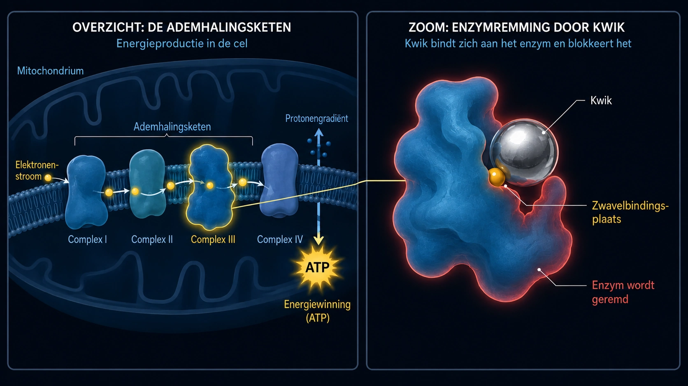

Tinnitus door medicijnen & gifstoffen (ototoxiciteit)
Laatst bijgewerkt: juni 2026
Mijn eigen tinnitus kwam door lawaai, niet door medicijnen – maar de toon is uiteindelijk dezelfde, en de artsen zeggen hetzelfde: leer ermee te leven.
Ik schrijf dit artikel over de chemische oorzaken omdat dit onderwerp in mijn eigen speurwerk een belangrijke rol heeft gespeeld. Sinds 2012 heb ik me intensief met de biochemie van de cel beziggehouden – ook met toxicologie en milieugeneeskunde. En juist hier is de cirkel rond: bij milieuartsen (zoals dr. Klinghardt of dr. Mutter) ziet men in de praktijk vaak het volgende: als bij mensen met tinnitus een verborgen belasting met gifstoffen of zware metalen een belangrijke factor is, kan gerichte ontgifting op celniveau vaak leiden tot een duidelijke of merkbare verlichting van het oorsuizen. Wat ik hier deel, is waar mijn eigen speurwerk me tot nu toe heeft gebracht – en de basis voor wat ik daarover op mijn pagina over mijn oplossingsaanpak beschrijf.
De chemische aanval van binnenuit
Als we aan tinnitus denken, hebben we meestal direct twee beelden in ons hoofd: het dreunende concert (lawaai) of zware stress dan wel innerlijke traumastress (psychosomatiek). Maar er is nog een derde oorzaak, die niet mechanisch en niet emotioneel is, maar puur chemisch: de tinnitus door medicijnen of gifstoffen. Naar mijn idee is deze vorm een van de minst voorkomende – maar voor de volledigheid wil ik ook over die derde oorzaak mijn kijk op de zaak geven. In vaktaal heet dat ototoxiciteit (vertaald: „giftigheid voor het oor").
Het klinkt in eerste instantie misschien abstract, maar ons binnenoor is extreem gevoelig voor bepaalde chemische stoffen. Sommige medicijnen of gifstoffen uit het milieu kunnen via het bloed rechtstreeks in het binnenoor komen en daar de kwetsbare haarcellen of de gehoorzenuw irriteren of zelfs beschadigen.
Het mechanisme: hoe chemie tonen maakt
Terug naar het ionenkanaal aan de punt van de haartjes, dat na overbelasting blijvend te wijd open blijft staan en niet meer goed sluit – zoals ik al op mijn subpagina over tinnitus door lawaai heb uitgelegd. Bij een lawaaitrauma verandert de mechanische kracht van de geluidsgolven de geometrische stand van de fijne zintuighaartjes.
Bij tinnitus door medicijnen of gifstoffen gebeurt er aan het eind vaak iets heel vergelijkbaars, alleen is de weg ernaartoe anders. Je moet je elke haarcel in het oor eigenlijk voorstellen als een kleine biologische batterij. Ze houdt een uiterst fijn evenwicht in stand van energie (ATP), mineralen en elektrische spanning.
Gifstoffen uit het milieu of toxische doses medicijnen kunnen dit fijne evenwicht verstoren doordat ze de werking van de energiecentrales van de cel – in vaktaal mitochondriën – ernstig aantasten. Op celniveau gebeurt dan, zoals ik de biochemie begrijp, het volgende:
Omdat de mitochondriën onmisbaar zijn voor de energievoorziening van de cel, daalt daardoor het energieniveau van de cel – dus haar ATP-niveau. Daardoor kunnen de minuscule pompen in de celwand, die voor hun werk voortdurend ATP – dus celenergie – verbruiken, simpelweg niet snel genoeg bijbenen om het chemische evenwicht in stand te houden. Het gevolg is dat calcium zich in de cel ophoopt. En omdat calcium in de biologie het directe startsignaal voor het doorgeven van prikkels is, dwingt dat overschot aan ionen de cel om permanent en ongecontroleerd „foutsignalen" af te vuren. Voor mij is dat geen mystiek toeval, maar een logisch biochemisch automatisme. Dat blijvende elektrische spervuur wordt door je hersenen als geluid waargenomen.
Welke toon je daarbij precies hoort – een hoog gefluit, een gesis of een diep gebrom – hangt meestal simpelweg af van waar in de cochlea (het slakkenhuis) de betrokken haarcellen precies zitten. Het oor wordt op dat moment meestal niet fysiek verwoest, maar zijn fijne innerlijke ordening raakt uit de maat.
De elektrische kortsluitingen (de gehoorzenuw)
Niet alleen de haarcellen lopen gevaar, maar ook de „stroomkabel" zelf – de gehoorzenuw. Die zenuw is omgeven door een beschermlaag, de myeline. Die isolatielaag is extreem rijk aan vetten en mineralen en reageert daarom bijzonder gevoelig op gifstoffen die in het bloed rondgaan. Wordt die laag door chemische stress verzwakt of „uitgedund", dan geeft de zenuw de signalen niet meer netjes door. Er ontstaan werkelijk elektrische „kortsluitingen".
En hier komt de pure logica van onze anatomie naar boven: onze gehoorzenuw is geen simpel draadje, maar een dikke bundel van duizenden minuscule zenuwvezels. Elke afzonderlijke vezel zorgt voor het doorgeven van één bepaalde toonhoogte. Ontstaat die giftige kortsluiting (de afbraak van myeline) nu precies bij de zenuwvezel die voor hoge frequenties zorgt, dan registreren je hersenen logischerwijs een hoog gefluit. Is er een vezel voor lage tonen bij betrokken, dan hoor je een diep gebrom. Welk geruis, gesis of gefluit je dus waarneemt, is absoluut geen toeval – het hangt in hoge mate af van op welk minuscuul plekje in de hoofdkabel de isolatie beschadigd is geraakt.
De universele wet van tinnitus
Als ik dat allemaal bij elkaar neem, blijft er voor mij één gemeenschappelijke noemer over: tinnitus is uiteindelijk altijd het gevolg van chronisch geprikkelde, overprikkelde zenuwen die geluid verwerken. Natuurkundig gezien maakt het bijna niet uit waar precies het startschot voor die overprikkeling valt:
- Of de haarcellen (door lawaai of medicijnen) vastzitten in de noodstand en de gehoorzenuw permanent met glutamaat overspoelen…
- Of gifstoffen uit het milieu en zware metalen de isolatie (de myeline) van de zenuwen aantasten en daar rechtstreekse kortsluitingen veroorzaken…
- Of zware, chronische psychosomatische stress zich in je hersenen opbouwt en de centra die geluid verwerken als het ware ‘van bovenaf’ voortdurend onder stroom zet…
Het eindresultaat is naar mijn ervaring uiteindelijk bijna altijd precies hetzelfde: het zenuwstelsel in dat gebied is chronisch geprikkeld en zendt een aanhoudend elektrisch SOS-spervuur uit. Toen ik dat had begrepen, joeg tinnitus mij geen angst meer aan. En de weg naar de oplossing werd duidelijk.
Typische oorzaken (ototoxische stoffen)
Maar goed, verder in de tekst: er is een hele reeks stoffen die bekendstaan om hun mogelijk ototoxische werking. (Belangrijk: dit is geen medische lijst om zelf een diagnose te stellen, maar alleen bedoeld voor het algemene begrip!)
1. Medicijnen
Sommige middelen kunnen het binnenoor overprikkelen. Maar het is niet genoeg om alleen hun namen te kennen – je moet begrijpen waaróm ze het systeem laten ontsporen. Alleen als we de mechaniek van de schade doorhebben, heeft onze latere aanpak (celenergie en ontgifting) überhaupt zin. Tot de bekendste groepen horen:
Hooggedoseerde pijnstillers (met name aspirine / acetylsalicylzuur)
Eerst even ter geruststelling: een gewone hoofdpijntablet geeft in de regel nog geen tinnitus. Volgens onderzoek zit hier vaak een strikte dosisparadox. Gevaarlijk wordt het meestal pas bij werkelijk giftige hoge doses (vaak meerdere grammen per dag). Als dat gebeurt, verloopt er in het binnenoor, zoals ik het begrijp, een kettingreactie in drie stappen:
- De motor gaat stotteren: men gaat ervan uit dat de werkzame stof prestine blokkeert, een minuscuul eiwit dat als een motor in de buitenste haarcellen werkt. Daardoor stort de akoestische versterker in het oor in. Als paniekreactie zetten je hersenen hun centrale „volumeknop" (central gain) vaak op maximaal, om überhaupt nog iets te kunnen horen.
- De overgevoeligheid van de zenuw: tegelijk wijzen modellen erop dat het medicijn de prikkelbaarheid van de receptoren bij de gehoorzenuw verhoogt. De prikkeldrempel zakt, waardoor je zenuwstelsel al op de kleinste signalen veel gevoeliger reageert.
- De stroomstoring (de vonk): aspirine werkt volgens biochemisch onderzoek in hoge doses als een „ontkoppelaar" in de mitochondriën. Het trekt de cel figuurlijk de stekker eruit (een tekort aan ATP). En precies hier zit het fascinerende, logische verschil met een lawaaitrauma: bij lawaai worden de fijne haartjes van de cel door de mechanische kracht werkelijk verbogen. Daardoor blijft het calciumkanaal als een klemmende deur blijvend open staan en stroomt er ongeremd calcium naar binnen. Bij een overdosis aspirine gebeurt dat niet. De haartjes staan volstrekt ongeschonden op hun plek. Hier is het „alleen" de chemie die uit balans is geraakt. Er stroomt helemaal niet meer calcium naar binnen dan anders – maar door die snelle val in energie kunnen de minuscule calciumpompen van de cel het simpelweg niet meer bijbenen om het er weer uit te werken. De cel is op dat moment met een normale hoeveelheid calcium al volledig overvraagd. Het resultaat is uiteindelijk hetzelfde: calcium hoopt zich binnen op en dwingt de cel om onophoudelijk de boodschapperstof glutamaat uit te stoten.
Het mogelijke gevolg voor tinnitus: die ongecontroleerde vloed aan glutamaat komt terecht bij zenuwen met een al verlaagde prikkeldrempel (stap 2) en wordt gestuurd naar hersenen waarvan de volumeknop helemaal open staat (stap 1). Er ontstaat een oorverdovend, blijvend spervuur. En precies die simpele logica op celniveau verklaart ook een alledaags verschijnsel waar zelfs veel artsen vaak geen sluitend antwoord op hebben: waarom heeft de oom die een week lang veel te veel aspirine heeft geslikt, na het stoppen vaak al na korte tijd weer rust in zijn oor – terwijl de 26-jarige neef die alleen twee keer in een luidruchtige disco was, al vier maanden lijdt aan een tinnitus die simpelweg niet weggaat? Voor mij ligt het antwoord hier glashelder: bij de oom was het een biochemische stroomstoring, gepaard met overgevoeligheid van de gehoorzenuw. Zodra het medicijn in overleg met een arts is gestopt en door het lichaam is uitgescheiden, kunnen de energiecentrales van de cel weer in hun normale fysiologische modus werken. Daardoor krijgen de pompen weer de nodige energie, zodat ze het overtollige calcium kunnen verwijderen en het systeem weer foutloos kan werken. Bij de neef uit de disco was er echter ruw, mechanisch geweld. Volgens mijn speurwerk en inzicht staan zijn fijne haartjes daarna in een veranderde geometrische stand: sommige zijn sterker, andere minder sterk gekanteld. Daardoor blijven de ionenkanalen blijvend verder openstaan, zodat zelfs bij een gelijkblijvende energievoorziening meer calcium de cel binnenkomt dan fysiologisch bedoeld is. Dat is alsof je met bruut geweld het scharnier van een deur hebt verbogen. En dat repareert zich logischerwijs niet zomaar vanzelf in een weekend, alleen omdat het lawaai voorbij is – meer informatie daarover vind je op mijn subpagina over tinnitus door lawaai.
Bepaalde antibiotica (aminoglycosiden)
Die sterke antibiotica worden meestal alleen in het ziekenhuis gebruikt bij zware bacteriële infecties (bijvoorbeeld gentamicine). Ze hebben een uiterst verraderlijke eigenschap: ze hopen zich vaak gericht op in de vloeistof van het binnenoor en worden daar maar tergend langzaam weer afgebroken – ze kunnen er weken of maanden blijven zitten. Daar reageren ze met ijzer in het lichaam en veroorzaken een enorme explosie van „vrije radicalen" (ROS). Dat is als een biochemische bosbrand, die de kwetsbare celmembranen en het inwendige actineskelet van de haartjes aantast. Hier geldt een simpele biologische logica met twee uitgangen:
- Uitgang 1 (de cel sterft): als het lichaam op dat moment toch al verzwakt is, bijna geen voedingsstoffen op voorraad heeft of al eerder schade heeft opgelopen, stort de cel onder die chemische bosbrand volledig in en sterft ze af (apoptose). Het paradoxale resultaat: in dat geval ontstaat er meestal géén tinnitus. Een dode cel zendt niet meer. In plaats daarvan ontstaat een puur, stil gehoorverlies (doofheid) op precies die frequentie.
- Uitgang 2 (de overlevingsstrijd = de tinnitus): de cel overleeft de aanval net, maar blijft zwaar beschadigd in haar structuur. Het is eigenlijk precies als een lawaaitrauma, alleen puur chemisch veroorzaakt. Het stijve inwendige skelet (actine) stort in, waardoor de haartjes werkelijk verwelken als bloemen zonder water. Maar de cel leeft nog! En omdat ze leeft, vecht ze verwoed tegen het calcium dat door dat lekke membraan naar binnen stroomt. En omdat die instroom van ionen het directe chemische bevel is om prikkels door te geven, wordt de zwaar beschadigde cel gedwongen om in een blijvende paniekstand onophoudelijk de boodschapperstof glutamaat naar de gehoorzenuw af te vuren. Uit die overlevingsstrijd van de cel komt een blijvend elektrisch spervuur – en precies dat neem jij waar als tinnitus.
Diuretica (sterk werkende plaspillen)
De zogenoemde lisdiuretica onttrekken je lichaam niet alleen water, maar spoelen ook flink wat elektrolyten als kalium en natrium weg. Wat is het probleem? Je binnenoor heeft zijn eigen kleine spanningsbron, de stria vascularis. Die weefsellaag pompt onophoudelijk kalium in de oorvloeistof om daar een constante elektrische spanning in stand te houden – dat is de batterij waar de haarcellen hun stroom voor het horen uit halen. Plaspillen blokkeren precies dat biochemische pompmechanisme. De elektrische spanning in het oor stort daardoor flink in. De biologische batterij is opeens „leeg" en het gehoorsysteem raakt in een chaotische alarmtoestand, die zich als geruis of gefluit ontlaadt.
Chemotherapeutica (zoals cisplatine)
Die agressieve kankermedicijnen zijn vaak gebaseerd op platina (een zwaar metaal). Ze zijn geprogrammeerd om in het DNA van cellen in te grijpen. Als er door dit medicijn echter tinnitus ontstaat, komt dat volgens farmacologische modellen door een werkelijke biochemische bosbrand in het binnenoor: het cisplatine ontneemt de cel in dat geval volledig haar belangrijkste eigen beschermstof (het glutathion). Zonder dat schild vreten vrije radicalen microscopische gaatjes in het celmembraan en verwoesten ze de ionenpompen. Het resultaat is een extreem onevenwicht van ionen: calcium overstroomt de cel en dwingt haar tot een blijvend spervuur van glutamaat. Tegelijk is cisplatine sterk neurotoxisch en breekt het de myelineschede (de isolatie) van de gehoorzenuw werkelijk af. Komt dat blijvende spervuur van de beschadigde cel nu terecht bij een onbeschermde, blootliggende zenuw, dan ontstaan er echte, meetbare kortsluitingen en misvuringen rechtstreeks op de hoofdkabel naar je hersenen. Ook hier geldt de biologische tweesprong bij tinnitus: wordt de cel volledig verwoest (apoptose), dan ontstaat meestal stilte (doofheid). Overleeft ze als een zwaar beschadigde ruïne met lekkende membranen en blootliggende zenuwen, dan vuurt ze vaak een blijvend storingssignaal af. Dat verklaart waarom tinnitus na chemotherapie vaak extreem hardnekkig is.
Kinine (malariamiddel & middelen tegen spierkramp)
Kinine vernauwt de bloedvaten sterk. Het binnenoor is anatomisch een absolute doodlopende weg – het wordt door één enkele, uiterst kleine slagader (de arteria labyrinthi) van bloed voorzien. Er zijn daar geen „omleidingen". Als kinine die minuscule slagader nu vernauwt en tegelijk de rode bloedcellen minder soepel maakt, gaat de bloedstroom haperen. De haarcellen worden dan afgesneden van de zuurstof en de voedingsstoffen die ze absoluut nodig hebben. Ze raken zwaar in ademnood en schieten direct in de tinnitus-paniekstand.
2. Zware metalen & gifstoffen uit het milieu
Zware metalen als kwik, lood, aluminium of ook cadmium en dergelijke gedragen zich op celniveau als extreem agressieve saboteurs. Ze vergiftigen de cellen van het binnenoor niet diffuus – ze haken in op heel specifieke biologische processen en blokkeren die. Dat gebeurt in het slakkenhuis en bij de gehoorzenuw via vier uiterst verwoestende mechanismen:
- 01Trojaans paard
- 02Thiol-hack
- 03Sloopkogel
- 04Myelineversnipperaar
Mechanisme 1: het Trojaanse paard (het verdringen van sporenelementen)
Metalen als cadmium, kwik en dergelijke lijken chemisch vaak verrassend veel op sporenelementen die je nodig hebt om te leven – vooral op zink en selenium. Je lichaam laat zich foppen en bouwt het zware metaal in de eiwitten in, in plaats van het zink. Het resultaat is fataal: zink werkt namelijk bij de receptoren van de gehoorzenuw als een soort natuurlijke „rem". Het zorgt ervoor dat de zenuw niet bij elke minieme prikkel direct overdreven reageert. Wordt dat zink door een zwaar metaal verdrongen, dan valt die rem volledig uit. De geluidssignalen knallen ongeremd het zenuwstelsel in, wat zich als oorverdovende tinnitus kan uiten. Tegelijk verstoort het verdringen van selenium de aanmaak van de belangrijkste antioxidant die je lichaam zelf maakt (het glutathion) flink. De bescherming van de cel dreigt in te storten.
Mechanisme 2: de thiol-hack (het verbuigen van de eiwitten)

Zware metalen hebben daarnaast een enorme chemische voorkeur voor zwavel. De meeste van onze enzymen en minuscule celpompen (zoals de calciumpompen die op ATP lopen) hebben aanhechtplekken die zwavel bevatten, de zogenoemde thiolgroepen (-SH). Als het zware metaal in het binnenoor aankomt, hecht het zich direct aan die zwavelgroepen. Op het moment dat het metaal zich met het enzym verbindt, dwingt het het eiwit om zijn 3D-structuur te veranderen – het verbuigt letterlijk. De calciumpomp van de haarcel raakt daardoor geblokkeerd en houdt op met werken.
Mechanisme 3: de biologische sloopkogel (rechtstreekse verwoesting van de cel)
Naast het saboteren van pompen tasten metalen de hardware van de cel ook rechtstreeks en fysiek aan. Lood en cadmium dringen de mitochondriën binnen (de energiecentrales van de cel), nestelen zich in de ademhalingsketen van de cel en knijpen de aanmaak van ATP flink af. De cel dreigt, figuurlijk gesproken, van binnenuit te verstikken. Tegelijk zetten de metalen in het oor een explosie van vrije radicalen in gang, die de vetrijke beschermlaag (het membraan) van de haarcel werkelijk oxideren – die wordt ranzig, smelt en raakt vol gaten (lipideperoxidatie). Het giftige calcium stroomt naar binnen als door een doorgebroken dijk. Daarnaast tasten de metalen het stijve eiwitskelet (actine) binnen de minuscule trilhaartjes aan. De moleculaire bruggen breken weg, de haartjes verwelken, knikken om en zetten de prikkelkanalen blijvend open.
Mechanisme 4: de myelineversnipperaar (aanval op de hoofdkabel)
Zware metalen vreten zich ook rechtstreeks in de kabel zelf – de gehoorzenuw – en verwoesten de isolatielaag daarvan, de myeline. Die laag bestaat voor bijna 80 % uit vetten, wat haar het perfecte slachtoffer maakt voor oxidatieve stress. De vrije radicalen bijten het vet werkelijk weg. Kwik hecht zich bijvoorbeeld aan het “Myelin Basic Protein”, de moleculaire lijm van de isolatielaag, waardoor die gaat afschilferen. Van lood wordt in de toxicologie sterk vermoed dat het nog een stap verder gaat en gericht de zogenoemde cellen van Schwann beschadigt – de minuscule bouwlieden die de myeline eigenlijk moeten repareren. Zonder isolatie vertragen de elektrische signalen van het horen enorm, springen ze over naar naastliggende, blootliggende zenuwvezels (cross-talk) en veroorzaken ze massale misvuringen.
- 01Chemische toevoer
Een medicijn in een giftig hoge dosis, of een zwaar metaal of gifstof uit het milieu, komt via het bloed in het binnenoor.
- 02Het evenwicht kantelt
Het ATP zakt, de pompen benen niet meer bij, calcium hoopt zich in de cel op, de myeline dunt uit.
- 03Blijvend foutsignaal
De verzwakte cel vuurt onafgebroken glutamaat af, of signalen springen over naar de buurvezels – en je hersenen nemen het waar als een toon.
Maar waarom heeft dan niet iedereen tinnitus? (De loterij van de zware metalen & de perfecte storm)
Op dit punt komt er een logische vraag op: als kwik (uit vis of amalgaam), lood (uit oude leidingen) en dergelijke zo extreem verwoestend huishouden, waarom heeft dan niet de halve mensheid direct tinnitus na een pizza tonno? Het antwoord zit in de schilden die je lichaam zelf heeft en in een werkelijke biologische loterij – en in het feit dat tinnitus bijna nooit door één enkele, losstaande factor wordt veroorzaakt.
1. De toxicologische loterij (de plaatselijke zwakke plek):
Zware metalen hebben geen ingebouwde gps die op het oor mikt. Ze gaan blind rond in je bloed en zoeken de plek van de minste weerstand (locus minoris resistentiae). Waar ze zich afzetten is vaak puur toeval en hangt ervan af waar je lichaam op dat moment een zwakke plek heeft. Als je bijvoorbeeld ’s nachts extreem met je tanden knarst of een stille ontsteking in je nek- en kaakgebied hebt, is de doorlaatbaarheid van de bloedvaten rond je oor enorm hoog. De zogenoemde bloed-labyrintbarrière, die je oor eigenlijk moet beschermen, staat dan wijd open. Het kwik vindt die open deur en zet zich precies daar af, bij de gehoorzenuw, terwijl het bij iemand anders misschien simpelweg verder trekt.
2. De vuilstort van je lichaam, het glutathionschild & het startdepot:
Een gezond lichaam maakt in de lever grote hoeveelheden glutathion – een molecuul dat zware metalen als met handboeien vastzet en uitscheidt voordat ze het oor bereiken. Maar hier komt de harde werkelijkheid van de blootstelling in het spel: sommige mensen komen simpelweg – vaak volstrekt onwetend – veel meer met zware metalen in contact dan anderen. Of dat via vervuilde lucht is, oude amalgaamvullingen in hun mond, hun werkplek, roken, voedsel met zware metalen erin of het constante contact met vervuilde alledaagse voorwerpen. Uiteindelijk is het altijd een giftig mengbeeld van de pure hoeveelheid die binnenkomt en het vermogen van je lichaam om die gifstoffen te binden en uit te scheiden. Lukt je lichaam dat niet, dan slaat het gifstoffen vaak op in schijnbaar veilige „vuilstorten" (zoals je botten of gewoon vetweefsel), om ze uit je bloedbaan te halen. En juist hier verschuilt zich een fatale biologische valkuil voor ons gehoor: ons zenuwstelsel – en heel in het bijzonder de isolerende myelineschede van de gehoorzenuw – bestaat voor bijna 80 % uit pure vetten. Als je lichaam dus verwoed probeert om lipofiele (vetoplosbare) zware metalen in je vetweefsel „tussen te parkeren", dan is in het ongelukkige samenspel van die loterij vaak juist dat uiterst gevoelige zenuwweefsel of de structuren rond de haarcellen aan de beurt.
Daar komt nog een hard, vaak verzwegen biologisch feit bij: veel mensen beginnen al op de dag van hun geboorte met een gevuld depot aan die giftige loterij. Waarom? Omdat onderzoek erop wijst dat moeders tijdens de zwangerschap een deel van de depots aan zware metalen die ze zelf in de loop der jaren hebben opgebouwd, via de placenta aan de foetus doorgeven. Het vat op celniveau is bij sommigen dus vanaf het begin al flink voller.
Gevaarlijk wordt het uiteindelijk als dat beschermsysteem kantelt: door extreme stress, genetica of een tekort aan voedingsstoffen loopt de ontgifting opeens tegen haar grenzen aan. De vuilstorten in je lichaam gaan open, of het gif dat nieuw binnenkomt wordt helemaal niet meer opgevangen, gaat rond in je bloed en zoekt – als in die loterij – onvermijdelijk zijn zwakke plek in je lichaam.
3. De fatale samenloop (de perfecte storm):
In de biologische werkelijkheid zien we hier echter vaak een uiterst complex mengbeeld – en dat ruimt ook het misverstand uit de weg dat iedereen die na een lawaaivoorval tinnitus krijgt, automatisch volledig vergiftigd zou zijn met zware metalen. Dat is niet zo.
Vaak gebeurt juist het volgende: iemand draagt door gifstoffen uit het milieu of zware metalen al een zekere giftige basisbelasting in zich, in de haarcellen, in hun mitochondriën of direct bij de gehoorzenuw. De myelineschede is misschien al licht uitgedund, de calciumpompen draaien al meer in de richting van hun limiet en de cellen werken op het randje van hun kunnen. Dat alleen veroorzaakt vaak nog helemaal geen blijvende tinnitus. Je lichaam vangt dat op en balanceert nog net op een staalkabel.
Maar dan komt de combinatie van het leven erbij: je glijdt een periode in met extreme chronische stress. De stresshormonen (adrenaline en cortisol) vernauwen je bloedvaten, knijpen de doorbloeding in je oor flink af en beroven je van de herstellende slaap. 's Nachts kan het systeem zich niet meer herstellen. Word je juist in die uiterst kwetsbare toestand ook nog blootgesteld aan een lawaaivoorval (of dat nu een acute geluidspiek is of chronische, voortdurende blootstelling aan geluid), dan kantelt het systeem ergens in die keten definitief. De hardware die al schade had, kan die mechanische kracht simpelweg niet meer opvangen. Het evenwicht van de ionen stort in, het actineskelet klapt in elkaar of de myelineschede geeft het definitief op – en de blijvende elektrische signalen kunnen ontstaan.
Het is naar mijn idee de fatale combinatie: het gif zorgt voor het sluipende verzwakken van de hardware, de stress snijdt de zuurstof af, en het lawaai is dan vaak alleen nog de laatste druppel die het vat op celniveau, dat toch al tot de rand vol stond, doet overlopen.
Naar mijn opvatting bestaat er aan het andere eind van het spectrum natuurlijk ook de tinnitus die puur door giftige medicijnen of door een zware vergiftiging met zware metalen wordt veroorzaakt. Als de chemische dosis hoog genoeg is (bijvoorbeeld door agressieve chemotherapie of een acute vergiftiging), is er absoluut geen „perfecte storm" nodig en ook geen lawaai erbij. Het gif is in die gevallen ruim voldoende op zichzelf om de energiecentrales van de cel plat te leggen of de zenuwen te beschadigen.
Waarom tinnitus door gif (zware metalen & bestrijdingsmiddelen) vaak zo hardnekkig is
Wie lawaai vermijdt, stopt de uitlokkende factor meteen. Bij tinnitus door gif – en dan bedoel ik heel concreet de belasting door echte gifstoffen uit het milieu, bestrijdingsmiddelen of zware metalen – is dat vaak veel ingewikkelder. Deze vorm wordt namelijk vooral dan zo extreem taai en hardnekkig als die stoffen werkelijk het hoofdmechanisme of een grotere factor in het tinnitusproces blijken te zijn. Dat komt doordat ze zich werkelijk diep in je zenuwweefsel en in je cellen nestelen. Ze verdwijnen niet zomaar na een paar uur uit je bloedbaan als een gewone pijnstiller. Ze klampen zich vast, en je lichaam kan die taaie gifstoffen vaak alleen met enorme moeite, extreem langzaam en over een lange periode weer uitscheiden.
Wat te doen?
En wat kun je nu doen? De wetenschappelijke en praktische onderbouwing van de mechanismen die ik hier heb beschreven, vind je op mijn bronnenpagina. Wie er dieper op in wil gaan en wil weten wat er naar mijn idee en ervaring concreet helpt bij tinnitus door medicijnen of gifstoffen, kan gewoon op de link hieronder klikken:
Belangrijke opmerking
Stop nooit op eigen initiatief met receptplichtige medicijnen! Heb je oorgeluiden in verband met medicijngebruik – vooral als die acuut zijn ontstaan – raadpleeg dan alsjeblieft op korte termijn een arts om de verdere aanpak te bespreken. Elke verandering in je medicatie hoort onder begeleiding van een arts te gebeuren.
De inhoud, verklaringsmodellen en strategieën die ik op deze website deel, zijn geen medisch advies, maar mijn persoonlijke ervaringsverslag en mijn eigen speurwerk. Elk lichaam is anders. Ik ben geen arts en beloof geen genezing. Heb je gezondheidsklachten, raadpleeg dan alsjeblieft een gekwalificeerde arts. Wie de hier beschreven benaderingen in de praktijk brengt, doet dat op eigen verantwoordelijkheid.